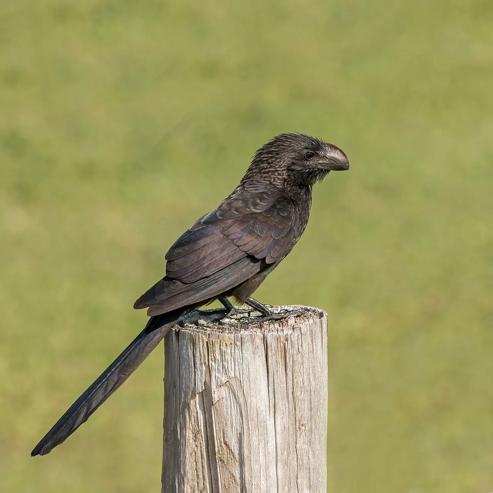
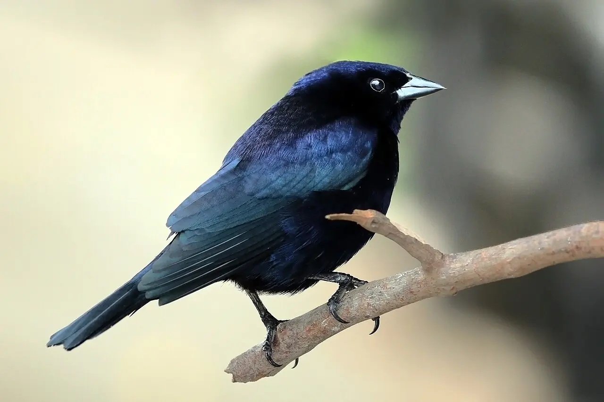
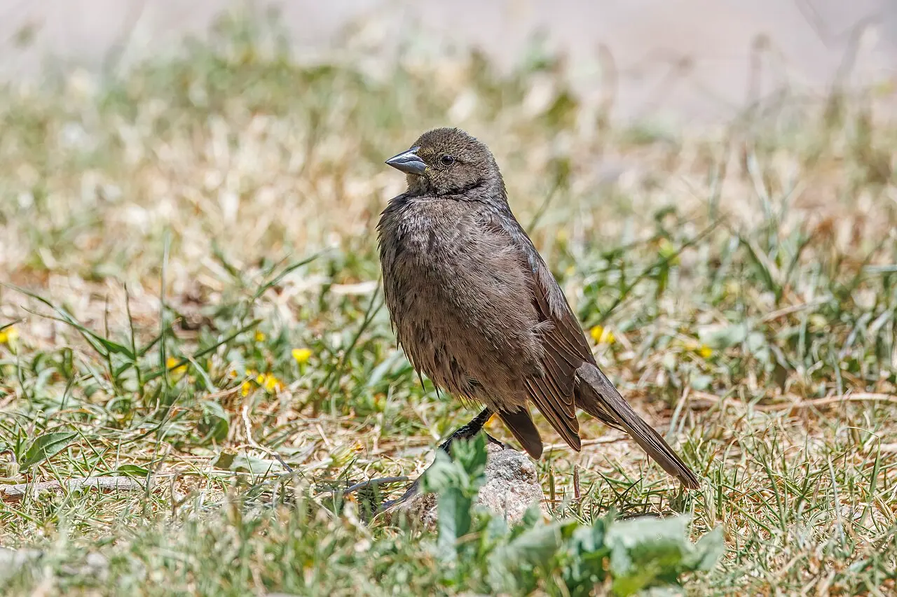

Módulo 5 Aula 22
Vida social
Ave sozinha é a exceção. Muitas vivem em grupo, ajudam umas às outras, ou, no caso do chupim, tiram vantagem dos outros.
- Como o anu-preto cria os filhotes em grupo
- O que é parasitismo de ninho
- O que são bandos mistos

Ave da aula
Anu-preto Crotophaga ani
O ninho de todos
O anu-preto quase sempre é visto em grupo. Os grupos fazem quase tudo juntos, e as fêmeas põem os ovos em um ninho comunitário, cuidado por todos[1]. Todos os membros chocam os ovos e criam os filhotes[3]. Como várias fêmeas põem no mesmo ninho, às vezes elas cobrem ovos mais antigos com gravetos e folhas, e só a camada de cima acaba nascendo[3]. Em um estudo em Porto Rico, cientistas analisaram como o tamanho do grupo afeta o estresse das aves[2].
Anu-preto
Crotophaga ani
Preto, de bico alto e curvo. Vive em bandos e não tem vergonha de dividir o ninho.
O ninho dos outros
Algumas aves nem constroem ninho. O chupim (Molothrus bonariensis) põe os ovos em ninhos de outras espécies. Isso se chama . Ele é um parasita generalista: usa muitas espécies como hospedeiras[4]. As fêmeas costumam bicar e furar ovos do hospedeiro, o que aumenta a chance de sobrevivência do filhote do chupim, que precisaria competir por comida[5].

Chupim
Molothrus bonariensis
O macho é preto com brilho azulado. Não cuida dos próprios filhotes: outras aves fazem isso.

Fêmea
Marrom, discreta. É ela que escolhe os ninhos.
Bandos mistos
Em florestas neotropicais, é comum ver grupos de aves de espécies diferentes se movendo e procurando comida juntas: são os bandos mistos[6]. Nos estudos, define-se um bando misto como um grupo de indivíduos de ao menos duas espécies que forrageiam e se movem próximos uns dos outros[6]. Alguns trabalhos falam em , que mantém o bando coeso, embora esse conceito seja debatido e varie de local para local[7].
Palavras novas
Teste rápido
Sem nota. Se errar, tente de novo.
O que é um ninho comunitário?
O que o chupim faz?
O que é um bando misto?
Referências e leitura complementar
Onde conferir o que foi dito nesta aula. Os números entre colchetes no texto levam a estas fontes. Os links abrem em outra aba.
- Smooth-billed Ani OverviewAll About Birds · Cornell Lab of Ornithology · inglêsVisão geral do anu-preto.
- The effect of social group size on feather corticosterone in the co-operatively breeding Smooth-billed Ani (Crotophaga ani)PubMed Central (artigo científico) · inglês · leitura complementarVida em grupo do anu-preto: ninho compartilhado e cuidado dos filhotes.
- Smooth-billed Ani – Crotophaga aniBirds of the World · Cornell Lab of Ornithology · inglês · leitura complementarO anu-preto e o ninho comunitário.
- Molecular tracking of individual host use in the Shiny Cowbird – a generalist brood parasitePubMed Central (artigo científico) · inglêsO chupim bota ovos em ninhos de mais de 250 espécies.
- Do shiny cowbird females adjust egg pecking behavior according to the level of competition their chicks face in host nests?PubMed (artigo científico) · inglês · leitura complementarFêmeas de chupim bicam ovos do hospedeiro.
- Neotropical mixed-species bird flocks in a community contextPubMed Central (artigo científico) · inglêsBandos mistos nas florestas neotropicais.
- A classification scheme for mixed-species bird flocksPubMed Central (artigo científico) · inglês · leitura complementarO que é um bando misto e espécies-núcleo.
Os endereços foram abertos e conferidos em 29/09/2026. Alguns sites de revistas científicas e de órgãos oficiais exigem verificação humana e não puderam ser testados por robô. Sites externos podem mudar ou sair do ar.
Para levar
Em três frases
- O anu-preto vive em grupo e cria os filhotes em um ninho comunitário, onde várias fêmeas põem ovos.
- O chupim põe ovos em ninhos de outras espécies, que criam os filhotes dele.
- Em bandos mistos, aves de espécies diferentes se movem e procuram comida juntas.